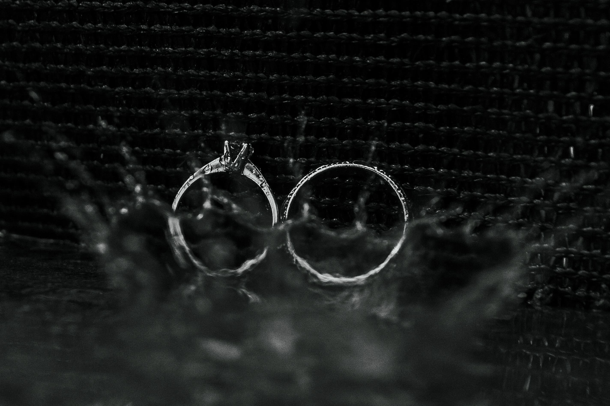
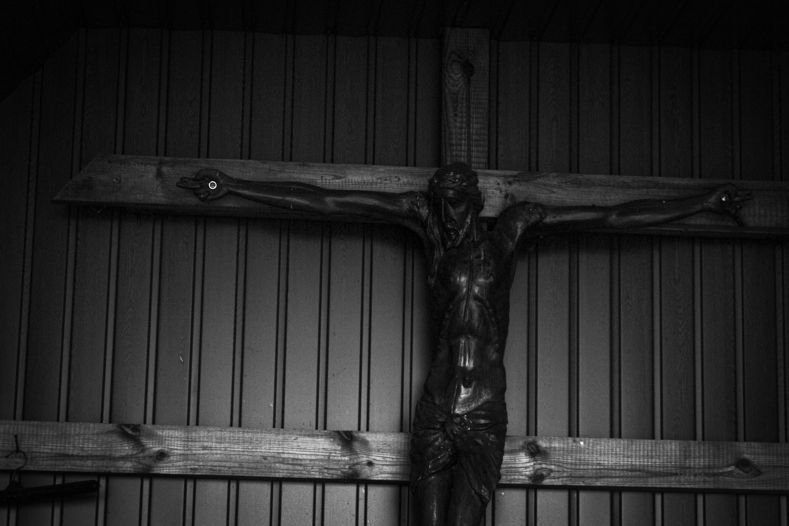

I am a student at Polish-Japanese Academy of Information Technology, currently pursuing a bachelor’s degree. I have also completed a practical photography course organized by the Akademia Fotografii, located in the Palace of Culture and Science.
I have been interested in photography for about five years. My passion for it began in high school when I attended an art and IT profile, where I took photography classes led by Kaja Kant. That was when I discovered how powerful an image can be in expressing emotions, telling stories, and presenting important social issues. Wanting to develop my skills further, I decided to expand my knowledge through various photography courses.

Currently, I continue to study photography at university under the guidance of Arkadiusz Wiedeński, which allows me to constantly improve both my technical skills and artistic perspective. I especially enjoy photographing living beings, particularly people. In my work, I focus on portraying selected social issues while paying close attention to emotionality, drama, and the expressive character of the image. Sometimes I choose black-and-white photography to emphasize mood and emotions, while at other times I work with color to highlight contrasts and additional meanings.

Although I mainly work with digital photography, I am also familiar with analog photography. I believe that both techniques offer unique ways of seeing the world and help develop sensitivity to detail, light, and composition.